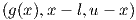

A standard Constrained Nonlinear Optimization problem can be written as:
|
|
where the function f : ℝn → ℝ is the objective function, cI : ℝn → ℝmI are the inequality constraints and cE : ℝn → ℝmE are the equality constraints. These functions are supposed to be smooth.
In general, the inequality constraints are of the form cI(x) = . The vector l and u are the lower and upper bounds on the variables x and g(x) and the non linear inequality constraints.
Under some conditions, if x ∈ ℝn is a solution of problem (O), then there exist a vector λ = (λI,λE) ∈ ℝmI × ℝmE, such that the well known Karush-Kuhn-Tucker (KKT) optimality conditions are satisfied:
|
|
l is known as the lagrangian of the problem (O), λI and λE as the dual variables while x is the primal variable.
To use the following functions, you should include pnl/pnl_optim.h.
To solve an inequality constrained optimization problem, ie mE = 0, we provide the following function.
The algorithm returns an int, its value depends on the output status of the algorithm. We have 4 cases:
The last case is equivalent to the two inequalities:
where cI(x). *λI where ’.*’ denotes the term by term multiplication.
The first inequality is known as the optimality condition, the second one as the
complementarity condition.
Important Remark 1: Our implementation requires that initial point x0 to be strictly
feasible, ie: c(x0) > 0.
Important Remark 2: The algorithm tries to find a pair (x, λ) solving the Equations (P),
but this does not guarantee that x is a global minimum of f on the set {c(x) ≥ 0}.